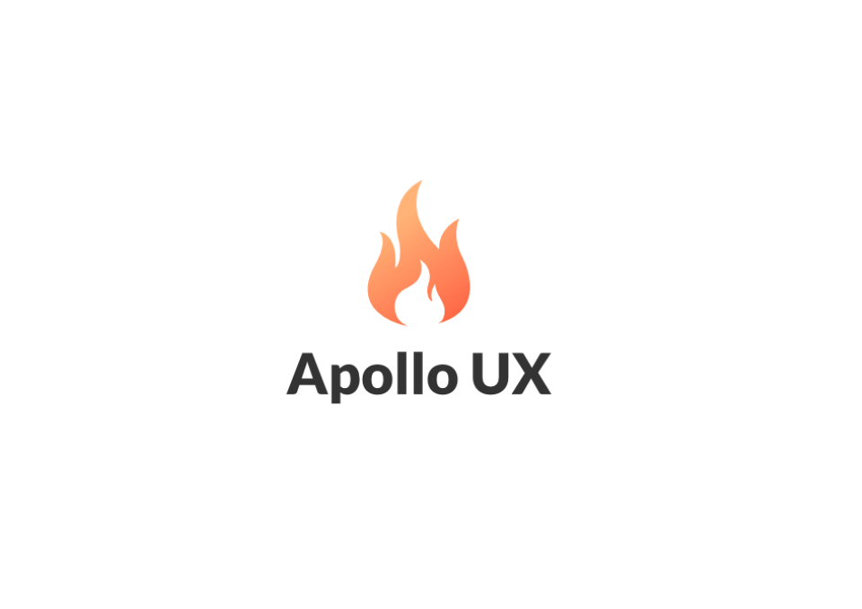

Apollo UX
Uma agência criada em Santos por amigos desenvolvedores
O mockup foi feito junto com Fernando Moreira e teve como inspiração
o deus
grego Apollo,que protegia a arte, música e o fogo. Toda a criação
de logo, cartão,
camisetas ficou em meu encargo e também auxiliei no desenvolvimento da parte
mobile e
da criação do portfolio no site.
Ferramentas Utilizadas
Fizemos todo o site na mão, utilizando desde bootstrap até várias bibliotecas
de javascript. Foi também focado em animações simples que deixassem o
site bem limpo. Para a identidade
visual usei toda a suite da Adobe.
Identidade Visual
Logo

Cartão


Versão Desktop